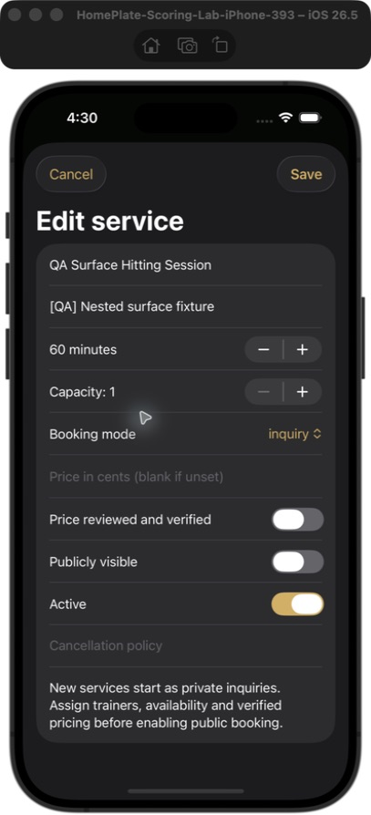
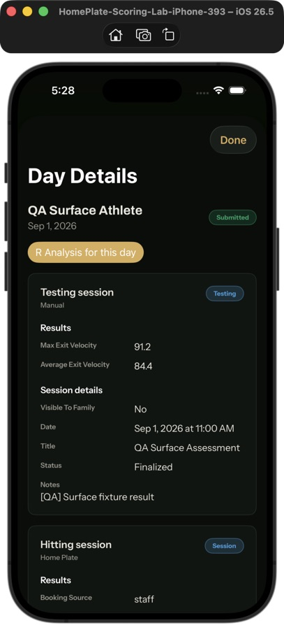
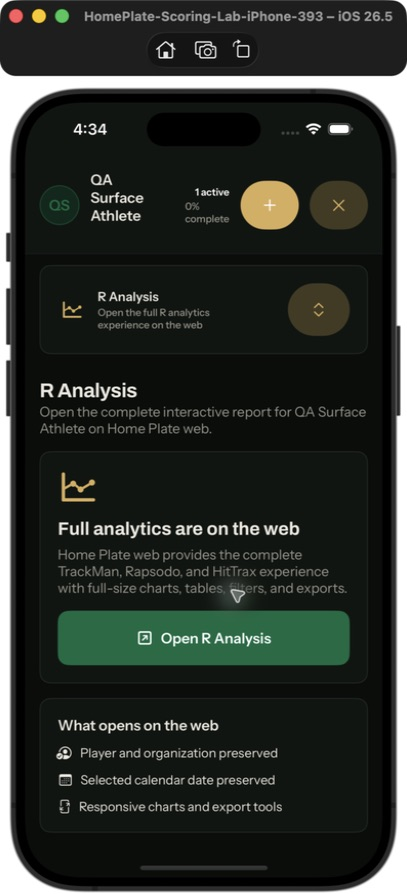

Player development / business operations
Home Plate
A baseball operating system connecting organization work, player development, and game-day records.
- Organizations
- Teams, facilities, academies, and independent trainers
- Development
- Programs, testing, sessions, results, and coach feedback
- Operations
- Services, bookings, calendars, payments, communication, and websites
Product structure
One record connecting the business and the baseball work
My Home Plate work connects organization, team, athlete, service, schedule, payment, program, and game records rather than treating each workflow as a separate app.
Owners and staff can manage services and operations. Coaches can assign work and review player results. Players and families can reach the schedule, development record, communication, and appropriate payment information from their own role.
The screenshots below come from a native iOS QA build on September 11, 2026. They use demonstration records and show implemented screens—not customer adoption, production usage, or App Store availability.
Native product evidence
Operations, development, and analysis access
These screens were captured inside the app. The names beginning with “QA” identify demonstration fixtures rather than real customer or athlete records.



What each screen establishes
Claims matched to visible evidence
- Business operationsThe service editor includes duration, capacity, booking mode, pricing review, public visibility, and active status.
- Remote player developmentThe athlete day view keeps submitted testing results and session details on the player timeline.
- R analysisThe mobile app exposes an R Analysis action and carries the selected athlete and date into the full responsive web report.
Important limitation: the current mobile evidence shows a handoff to the full R analytics report on the web. It does not show the full charts rendered inline inside the native app.